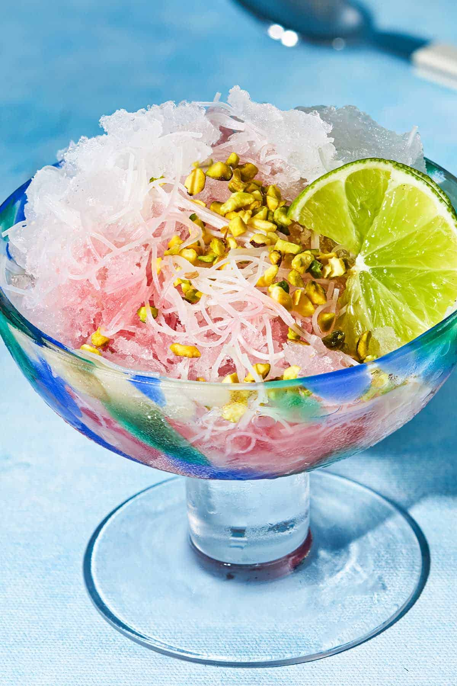
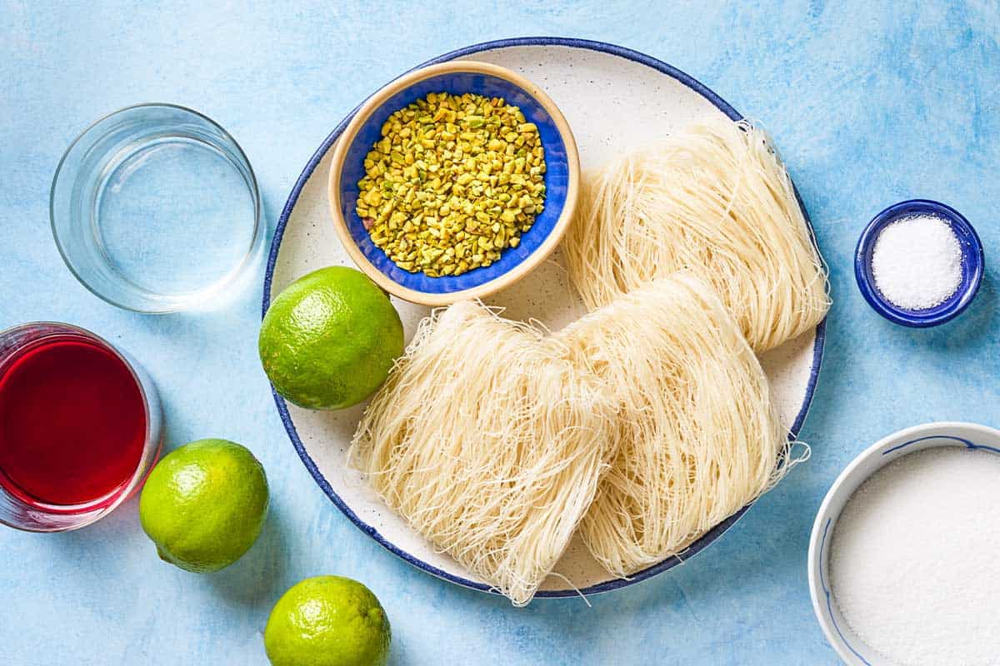
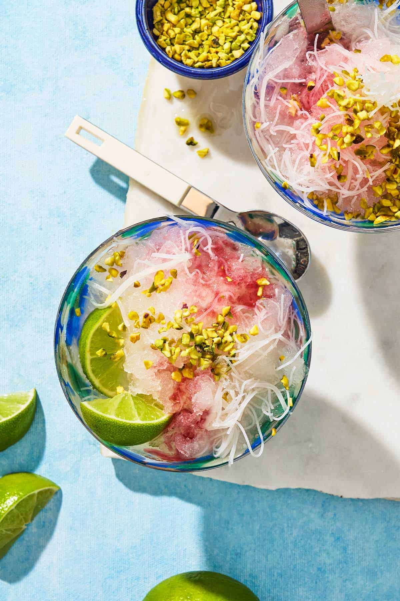
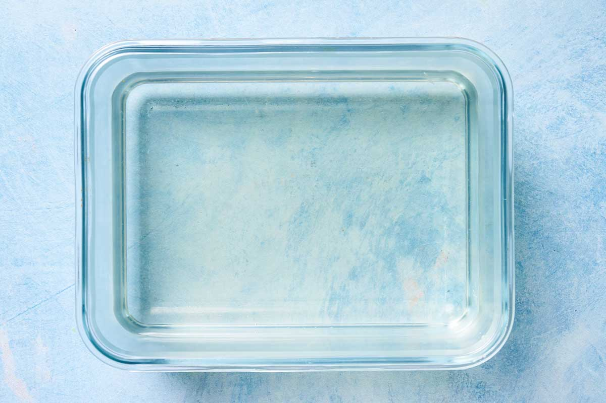
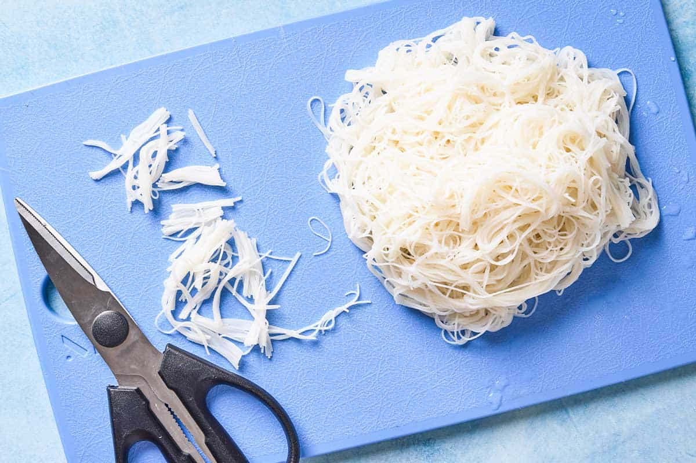
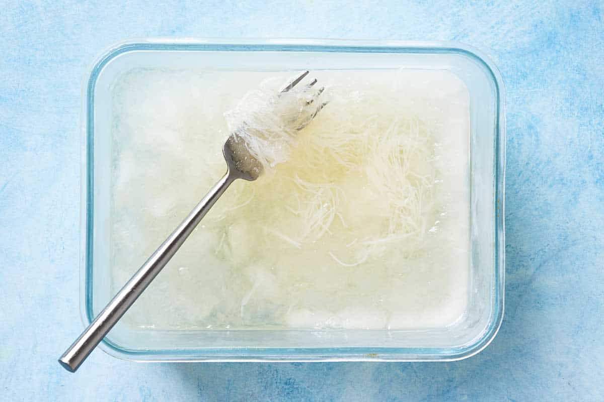
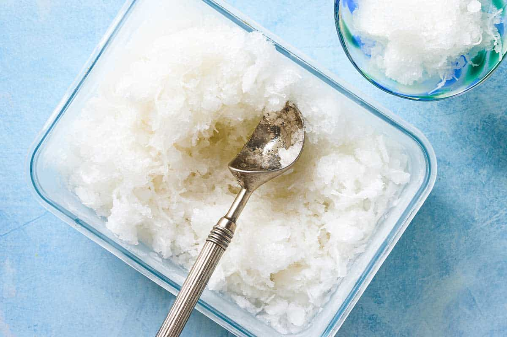
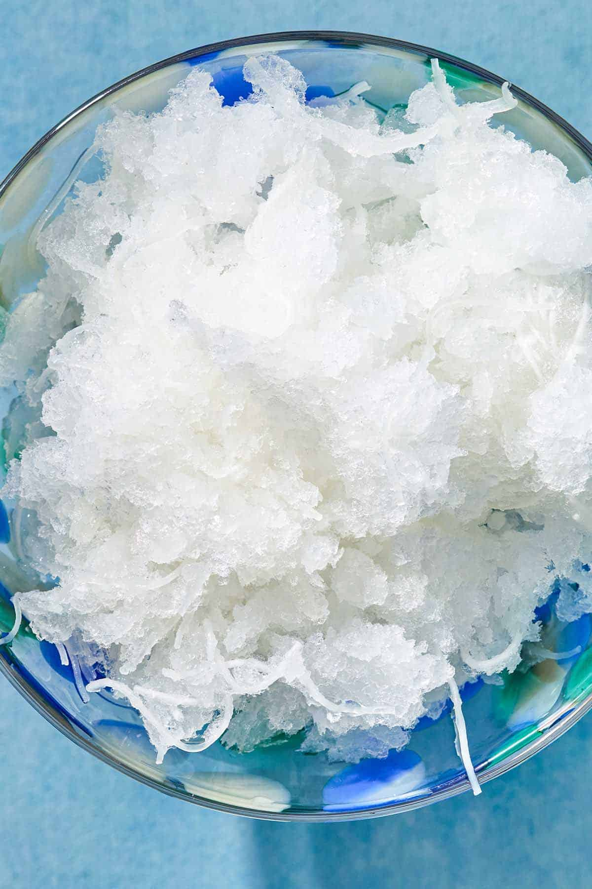
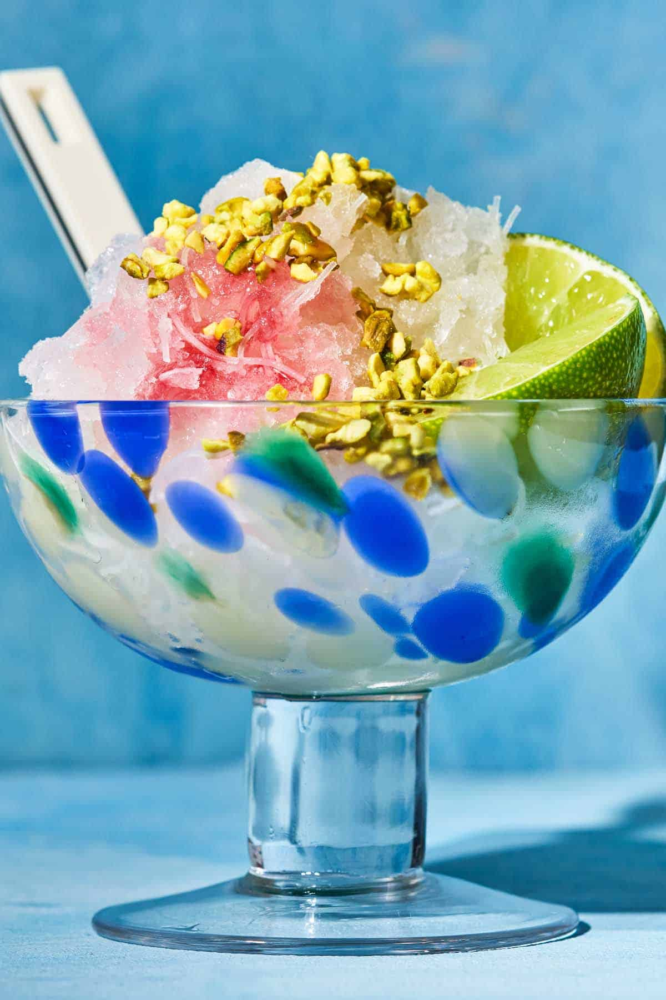

فالوده
Faloodeh (Persian Rose & Lime Granita with Vermicelli) — An ancient Persian frozen dessert — icy, floral and refreshing. Crunchy vermicelli noodles suspended in a rose and lime granita. No special equipment needed.
Ingredients
- 1.5 cups sugar
- 4.5 cups water
- 0.3 teaspoon sea salt
- 1 lime, juiced
- 2 tablespoons rose water
- 115 grams thin vermicelli rice noodles (white rice only, not wheat)
- Lime wedges (to serve)
- Tart cherry syrup (optional, to serve)
- Slivered pistachios (optional, to serve)
- Pomegranate seeds (optional, to serve)
Step 1
Make the rose syrup: In a medium saucepan over medium-high heat, combine sugar, water and salt. Bring to a boil, then reduce heat and simmer for 5 minutes, stirring regularly.
Step 2
Add rose water and lime: Remove from heat and stir in rose water and lime juice. Allow the syrup to cool completely.
Step 3
Freeze the syrup: Transfer the cooled syrup to a wide, freezer-safe dish and place in the freezer uncovered for 30 minutes.
Step 4
Cook the noodles: While the syrup freezes, bring a pot of water to the boil. Prepare a bowl of ice water nearby. Cook the vermicelli rice noodles according to packet instructions, then drain and transfer immediately to the ice water to stop cooking.
Step 5
Cut the noodles: Once fully cooled, drain the noodles again. Use kitchen scissors to cut them into roughly 2.5 cm (1 inch) pieces. Set aside.
Step 6
Combine and freeze: Remove the syrup from the freezer and stir in the noodles. Return to the freezer uncovered for 90 minutes.
Step 7
First scrape: Remove from the freezer and use a fork to scrape the mixture from the sides into the centre of the dish, then stir. This creates the granita-style texture and prevents large icy chunks from forming. Return to the freezer for 60 minutes.
Step 8
Second scrape: Repeat the scraping and stirring process. Return to the freezer for another hour.
Step 9
Third scrape: Repeat once more. The texture should be coarse and icy with crispy noodles throughout.
Step 10
Serve: Scrape into small bowls with a fork. Serve with lime wedges and optionally drizzle with tart cherry syrup, and scatter slivered pistachios and/or pomegranate seeds on top.
Recipe source: The Mediterranean Dish
Use white rice vermicelli only — wheat noodles will give an unpleasant flavour and texture.
Rose water can be overpowering, so start with 2 tbsp and adjust to taste. Orange blossom water works as a substitute.
Store in the freezer for up to 3 months. Remove 10 minutes before serving and scrape with a fork before ladling into bowls.
For a quick tart cherry syrup: simmer ¾ cup tart cherry juice over medium-low heat until reduced by half. Cool completely before using.








